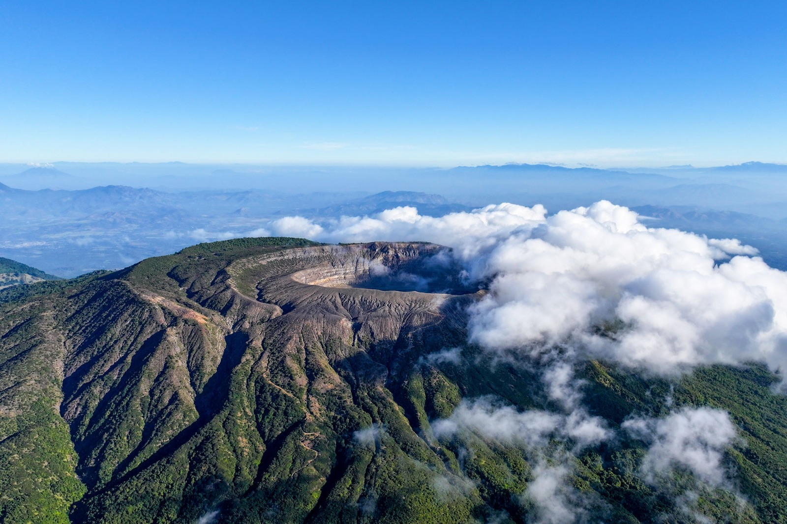

Lago de origen volcánico reconocido
por su belleza escénica y su infraestructura turística.
Es uno de los cuerpos de agua más importantes del país,
ideal para paseos en lancha, kayak y estadías en hoteles
y restaurantes ubicados en sus alrededores.

Volcán Ilamatepec
Es el volcán más alto del país y uno de los destinos favoritos
para el senderismo. Su cráter alberga una laguna de color turquesa
que constituye uno de los principales atractivos naturales del occidente salvadoreño.